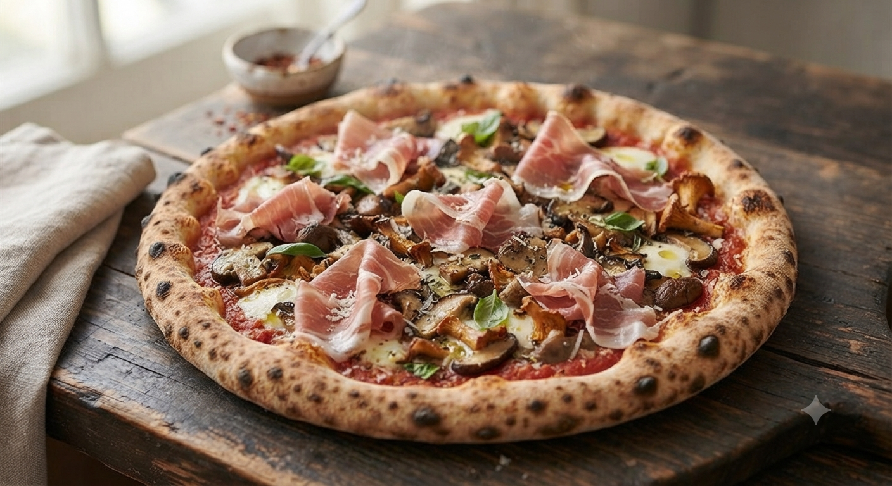

本格ナポリピッツァ認定店
本場イタリア・薪窯で焼き上げる、人生最高の「一枚」
東京の有名店なら3,000円超の味が 約半額
真のナポリピッツァ協会が認めた世界で373番目の加盟店。伝統的な製法を守り抜いています。
イタリアから空輸した石窯。400度以上の高温で焼き上げる、外カリ中モチの極上生地。
高品質な味を、東京の半額ほどの価格で。地元盛岡で愛され続ける理由がここにあります。
よくある本格イタリアン
ピアーチェのこだわり
「人生最高のピザの一つとなりました。生地は軽くて風味豊か、トマトもモッツァレラも言う事無し。」
（40代 男性 飛び込みでの来店）
「ピザ以上にパスタも美味しい。特にボンゴレビアンコはニンニクとアサリの風味が絶妙でした。」
（30代 女性 旅行中の来店）
「お店の焼きたてピッツァをご家庭やオフィスで味わいたい」
「本場のティラミスをお土産やご褒美スイーツに持ち帰りたい」
お客様のお声にお応えし、特製テイクアウトメニューの開始に向けて準備を進めております！
ご家庭のトースターで温め直しても、モチモチ食感と香ばしさがしっかり蘇る特製生地でご提供。パーティーやホームランチにも最適です。
焼きたて・冷凍パックを検討中クチコミで「本場イタリアより美味しい」と大絶賛された特製ティラミスが、お持ち帰り用カップで登場予定。大切な方へのお土産にも。
数量限定・手土産ギフトBOX予定世界に認められたこの味を、
今日、盛岡で体験してください。
